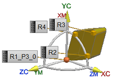
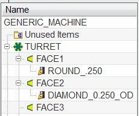

You will create a standard turning ID_55_L tool named diamond_0.250_id with the inherited tool number of 3.
Create the turning tool with the following parameters:
Nose Radius = .03125
Inscribed Circle Diameter = .250
Tool Material = TMC0_00004
P Number = P2

View the tool in the Machine Tool View of the Operation Navigator.

Click OK to complete the operation.
Close the part without saving it.